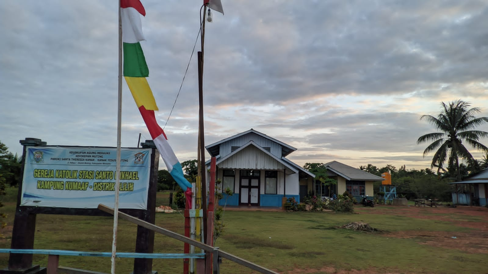
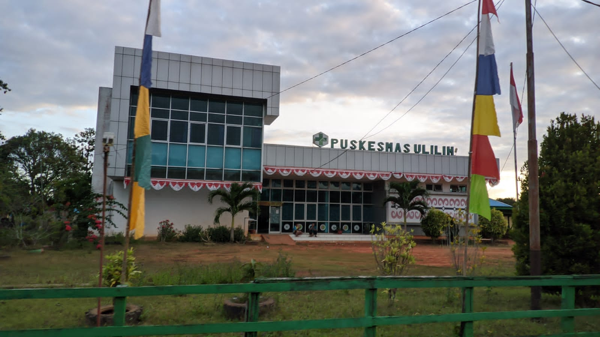
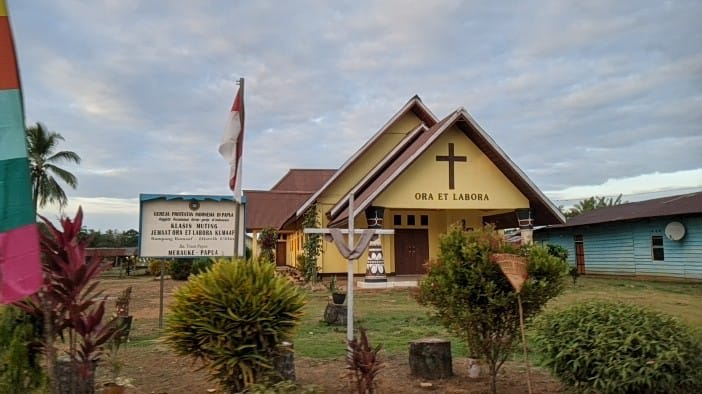

Sejarah
kampung Kumaaf adalah sebuah kampung di distrik Ulilin, Kabupaten Merauke, Papua Selatan, Indonesia. Kab. Merauke Prov.Papua Selatan
kampung kumaaf terdiri dari 3 RW dan 9 RT. pemekaran kampung kumaaf di mulai dari 2013 sampai sekarang.
Kampung Kumaaf didirikan pada tahun 1986-1987 sebagai bagian dari program transmigrasi yang dilakukan oleh pemerintah.
kampung ini terletak di Kabupaten Merauke, di daerah pedalaman Indonesia. Sejak awal berdirinya, desa ini menghadapi berbagai tantangan.
Pada tahun 1992, desa ini mengalami serangan hama wereng, belalang, dan tikus yang mengancam kelangsungan pangan penduduk. Pada tahun 1997, desa ini juga mengalami kebakaran hutan yang mengakibatkan kerugian besar. Selain itu, desa ini juga mengalami kemarau panjang yang menyebabkan krisis pangan.
Meskipun menghadapi tantangan tersebut, desa ini terus berkembang dan pada tahun 2019, terpilihlah seorang kepala Kampung baru.
Desa Kampung Kumaaf memiliki potensi dalam sektor pertanian, dengan mayoritas penduduknya bekerja sebagai petani.
Desa ini juga memiliki potensi dalam sektor pariwisata, dengan keindahan alamnya yang masih alami dan belum banyak dijamah oleh wisatawan.
Potensi ini dapat dikembangkan untuk meningkatkan perekonomian dan kesejahteraan penduduk desa.
Profil
Fasilitas Kampung

TK KUMAAF

SD INPRES MUTING 2

GEREJA PENTAKOSTA

GEREJA KATOLIK

PUSKESMAS ULILIN

GEREJA PROTESTAN

Masjid

BANK BRI